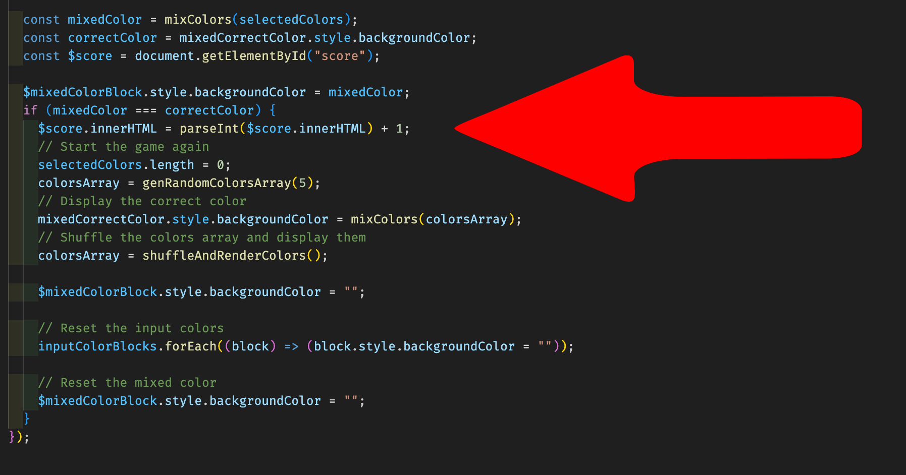

Workshop - Start To Code
We gaan de minigame ColorQuest bouwen! Het doel van het spel is om uit 5 verschillende kleuren de juiste combinatie met 3 kleuren te vormen en de gewenste toverdrank kleur te bekomen.


De game is opgebouwd met drie codeertalen:
- HTML
- CSS
- JavaScript
Deel 1: Code Editor en mappenstructuur
Voor dat we starten, hebben we een code-editor nodig, hier gebruiken we Visual Studio Code. Ook zullen we een paar afbeeldingen nodig hebben om dezelfde look en feel te krijgen als ColorQuest.
Afbeeldingen: Plus.svg, Equal.svg, Flask.svg, (Crown.svg, Questionmark.svg). Waarom zijn het svg's?
{kind=link}
{kind=link}
{kind=link}
{kind=link}
{kind=link}
- 1.1 Maak een nieuwe map aan op je computer en noem deze
ColorQuest. - 1.2 Open Visual Studio Code en sleep de map
ColorQuestin de editor. - 1.3 Maak een bestand en drie mappen aan in de map
ColorQuesten noem dezeindex.html,css,imgenjs. -
1.4 Vul de bestanden aan tot onderstaande resultaat. Voeg deze
reset.csstoe in decss-map. Wat is die reset.css? - 1.5 Installeer de extensie Live Server in Visual Studio Code.
- 1.6 Klik met de rechtermuisknop op het bestand
index.htmlen selecteer "Open with Live Server". - Een stap dichter bij jouw toverdrank!
Deel 2: HTML & CSS: de structuur en stijl
De basis van de game is de HTML en CSS. Hierin zullen we de structuur van de game opbouwen en de stijl toevoegen.
- 2.1 Kopieer de onderstaande code in het bestand
index.html. Dit is een standaard startstructuur voor HTML. - 2.2 Kopieer de onderstaande code in het bestand
main.css. Dit bevat alvast een aantal basisstijlen die we later zullen nodig hebben voor de look & feel van onze app. Zowel globaal (bv. hoe groot mag de leestekst zijn) als per sectie (bv. hoeveel plaats er komt tussen elke sectie). - 2.3 Ververs de pagina in de browser en bekijk het resultaat. (de url is hoogstwaarschijnlijk: http://127.0.0.1:5500). Als alles goed is, ziet het er nu zo uit. Een volledig donker gekleurd vlak zoals de achtergrond van deze website.
-
Probeer het uit: Laten we het eens van kleur veranderen. Hiervoor moeten we de kleurwaarde veranderen. Zoek naar
--dark: hsl(206, 19%, 22%);en verander dit lijntje code naar bijvoorbeeld--dark: indigo;. De achtergrond is nu paarsachtig. Wat is hsl? - 2.4 We gaan de webpagina nu indelen in twee helften met daarin nog twee sub-helften waar de inhoud kan komen. Voeg onderstaande elementen toe, en plaats ze tussen de openings
<main>-tag en sluitings</main>-tag - 2.5 Voeg de onderstaande code toe tussen de juiste
<section>-tag en sluitings</section>-tag. "Maar ik zie geen kleurtjes?" Het zijn grotendeels elementen die leeg zijn en worden later gevuld met kleurtjes aan de hand van Javascript in deel 3. - Probeer het uit: Wat als we 1, 2 of zelfs 3
<div class="colors-block"></div>binnen<section class="bottom-section__left">verwijderen? Wat gebeurt er dan? De bolletjes beneden links verdwijnen bij het refreshen van de pagina. Laten we ze terug zetten tot we er weer 5 hebben. - Tijd om wat kleurtjes toe te voegen, nee?
Deel 3: Interactiviteit met JavaScript
De laatste stap is het toevoegen van de JavaScript. Hierin zullen we de functionaliteit van de game toevoegen.
- 3.1 Eerst en vooral moeten we de link leggen naar het JavaScript-bestand. Voeg deze regel code toe, onderaan net voor de sluitings-body-tag.
<script src="js/main.js"></script>. - 3.2 Ga naar het bestand
main.jsen zet er het volgende in:alert('Hello world'). Bewaar het bestand en kijk wat er in de browser gebeurt (als je deze herlaadt). - 3.3 Komt de pop-up bij jou ook tevoorschijn? Dan we weten nu dat ons JavaScript-bestand uitgevoerd wordt en gelinkt is aan ons pagina.
‼️ In de volgende stappen zal de code stap per stap onder elkaar in het main.js bestand worden toegevoegd. We hebben de indeling van de code op deze manier voorzien om de workshop haalbaar te houden.
-
3.4 Kopieer de onderstaande code en plaats deze in het
main.jsbestand. Hiermee selecteren we de velden waar de 5 gegenereerde kleuren verschijnen en de 3 flesjes waar de kleuren geselecteerd worden (inputColors). Deze velden slaan we op in een array om er zo bewerkingen mee te doen. Wat is een array? -
3.5 Als volgt hebben we 2 functies nodig dat we gebruiken om een willekeurig RGB-kleur te genereren.
Wat is een functie?
In onderstaande code vind je de 2 functies dat we hiervoor nodig hebben. - 3.6 Dan hebben we een functie nodig dat een array van willekeurige kleuren genereert. In onderstaande code vind je de functie dat we nodig hebben om deze array te genereren. Die maakt gebruik van de functies die we hebben opgebouwd in stap 3.5.
- 3.7 Allemaal leuk en wel, maar hoe kan ik dan de kleuren opgebouwd in mijn JavaScript zien in mijn HTML? Door de kleuren toe te voegen aan de pagina.
Ga zelf al eens kijken! Refresh de browser en er worden steeds 5 verschillende kleuren toegevoegd, zo ver zijn we al!
In 'DEEL 2: stap 2.5' werd verteld dat je in het index.html bestand enkele keuze bollen kon verwijderen.
Nu dat we deze bollen hebben ingekleurd kunnen we dit ook weer verder gaan bewerken als we willen.
- Voeg nog wat extra
<div class="colors-block"></div>lijnen toe binnen <section class="bottom-section__left">, houd wel bij hoeveel lijnen er staan want dit zul je nodig hebben. - Ga terug naar het
main.jsbestand. - Zoek de code terug dat we in onze laatste stap 3.7 hebben toegevoegd, vind de lijn
let colorsArray = genRandomColorsArray(5); - Wat valt je op? 5 = het aantal kleuren en het aantal bollen dat ter beschikking waren. Het cijfer 5 geven we in deze functie mee als een parameter. Wat is een parameter?
- Dat wil dus zeggen als we 5 verhogen, het aantal kleuren dat we genereren ook verhoogd en zo de extra bollen ook kunnen vullen.
- Probeer het even uit en plaats daarna het cijfer terug op 5 om verder te gaan met de workshop.
- Vergeet ook niet om de extra bollen terug te verwijderen zoals in stap 2.5!
- 3.8 Het volgende dat we gaan toevoegen is de gezochte kleur in het spel (het kleur in de uiterst rechtse flesje). Hiervoor gebruiken we 1 functie (mixColors) om de kleur te genereren a.h.v. 3 van de 5 kleuren uit de array die we eerder hebben gemaakt. Nadat onze kleur is gemixt door de functie kunnen we deze toevoegen aan de bottle.
- 3.9 Het zal je misschien opgevallen zijn na een paar keer refreshen: "Het resultaat is precies altijd een mix van de eerste drie kleuren". Inderdaad, laten we het spel toch iets moeilijker maken. In onderstaande functie word de kleuren array door elkaar geschud en meteen al opnieuw toegevoegd aan de bolletjes.
- 3.10 Het volgende dat we moeten doen is het spel nu echt interactief gaan maken. Als eerste gaan we hiervoor een functie toevoegen om de handeling te regelen om kleuren te selecteren. Ook voegen we de klik interacties aan de flesjes.
- 3.11 Last but not least! Moeten we de 3 geselecteerde kleuren kunnen mixen en controleren of het de juiste kleur is, indien het de juiste kleur is moet er ook een punt worden toegevoegd in de score. Voeg deze code toe en als alles goed is zou het spel nu volledig moeten zijn!
Ga zelf eens kijken! De app zou er nu zo moeten uitzien:
De lijn code dat we toegevoegd hadden in 3.7 om de kleurtjes te zien: addColorsToDom(colorsArray) kunnen we nu verwijderen.
1 te vervangen kan je de hoeveelheid punten per juist antwoord wijzigen, test het zelf even uit!

En nu tijd om te spelen, have fun en laat je project zien! üòÑ
Oplossingen: